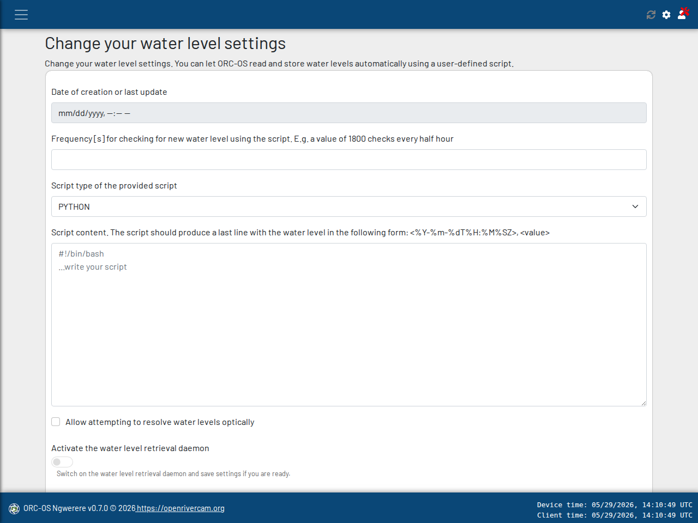

Automated water level retrieval#

In ORC-OS, each video must have an accompanying water level. This is used to determine how the image should be projected to real-world coordinates, and to estimate the wetted cross section.
Note
ORC-OS can also estimate water levels optically. For more information, check the section on processing with optical water level estimation.
If you have a water level sensor installed on the site, or you are able to retrieve water levels for your site from a
web source such as an API end point, you can provide your own Bash or Python script that retrieves these
water levels at regular intervals. Go to the Options menu, and select Water level settings. This should bring you
to the displayed page.
In the form you must fill out:
Frequency for checking for new water levels. Your provided script will be run after an interval of this value in seconds. If the script returns identical timestamp values (for instance because the API does not yet deliver any new data), then no new value will be written to the database. This ensures that you do not get any duplicates.
Script type. Select PYTHON or BASH.
Script content, i.e. the script itself.
The script MUST comply to the following rules:
The script must be pure Bash or Python and must be entirely valid. If you provide an invalid script, you will receive an error message that hopefully helps you to debug your script. We highly recommend to build and test your script outside ORC-OS first before uploading it here.
The script can output whatever you want, but at the end a single-line output MUST be returned to the screen as very last line with a particular format. This format is
YYYY-MM-DDTHH:MM:SSZ, <value-in-meters>. If you are used to python coding, the datetime string format is%Y-%m-%dT%H:%M:%SZ, <value-in-meters>. Here<value-in-meters>is the water level in the locally defined datum in meters (not feet, or inches, or centimeters). The datum could be anything such as a local geo datum, bottom of the stream, anything that is logical and can be easily reproduced from a local stand point.
Note
Let’s have a look at an example.
For instance for the date 21st of January 2025 and time 15 minutes and 23 seconds past one P.M. UTC, we have an API that reports a water level of 93.35 meters. This seems a very high value, but as said, here the datum is a local geodatum, or mean sea level, and the river bottom may be located about 90 meters above that datum. For this case, your script, that retrieves this value from the API must report the following as last line:
2025-01-21T13:15:23Z, 93.35
The script should be copy-pasted as plain text in the script content box at the bottom.
When uploading, you must ensure that the device is at that moment capable to run the script. For instance, when you are uploading a script that calls an API, you must be connected to the internet. If the script reads a water level from a connected sensor, the water level device must be properly connected and communicating with the device. ORC OS will test the script by running it and validating that the script provides the last-line outputs as indicated above.
A full example script (and working with internet connection) is provided below. This script calls the open API of the
Waterboard Limburg which is in the public domain, and retrieves a water
level for the site “Hommerich” in their operating area. Note that this is a PYTHON script, hence you MUST select
PYTHON as script type. There is ample commented documentation in the script to understand properly how the
script works if you are used to Python. Go ahead and try it out and see if it gets accepted.
import os
import pandas as pd
import requests
from datetime import datetime, timedelta
# script to load one-day of 15-minute values from waterboard Limburg's API and only print the very last value
# to screen
# below we have a function that calls the latest values. It looks back over a given time interval dt from the current
# time. It will return a http response object.
def retrieve_latest_vals(url, dt=30*60):
"""Retrieve latest values from Water board Limburg API."""
t_utc = datetime.utcnow() # get the current time
dt = timedelta(seconds=dt)
start_time = t_utc - dt # get a start time
start_time_str = start_time.strftime("%Y-%m-%dT%H:%M:%SZ")
params = {
"$filter": f"DateTime ge {start_time_str}",
"$orderby": "DateTime"
}
# execute the request
r = requests.get(
url,
params=params
)
if r.status_code == 200:
return r
else:
# if for instance the site is down or you are not connected...
raise ValueError(f"Error in response: {r}")
def parse_last_value(body):
"""Get the last value from response JSON data body (e.g. retrieve by response.json()."""
vals = body["value"]
if len(vals) == 0:
raise ValueError("The response did not contain any data! Check if the site was down")
t = datetime.strptime(vals[-1]["DateTime"], "%Y-%m-%dT%H:%M:%SZ")
value = vals[-1]["Value"]
return t, value
url = 'https://www.waterstandlimburg.nl/api/Location(185)/Measurements' # this is the full end point
dt = 1440 * 60 # full day back looking
# first we retrieve a response from the API end point
r = retrieve_latest_vals(url, dt=dt)
# we retrieve the response body and pass that to retrieve the last value.
t, value = parse_last_value(r.json())
# this is where the magic happens. The line below print EXACTLY the format, required for ORC OS, including the Z
# for UTC+00 time zone and the comma between the time and the value.
print(t.strftime("%Y-%m-%dT%H:%M:%SZ, "), value)
# and that's it. This script will run at the interval selected by you and store the values in the ORC OS database.